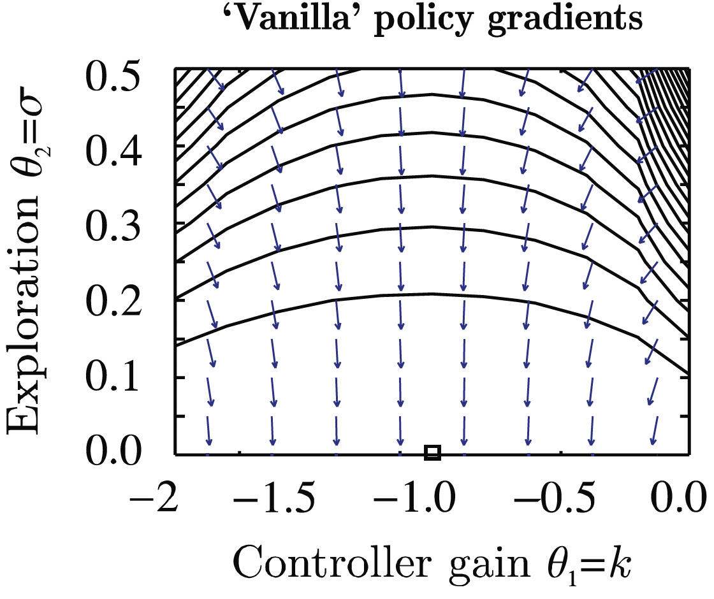
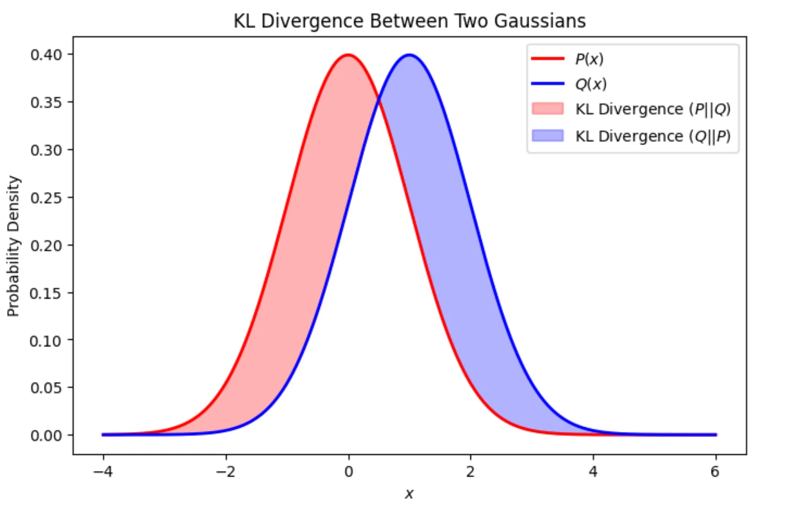
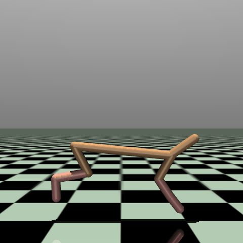
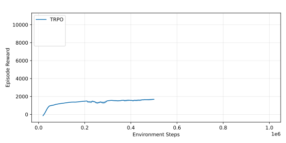
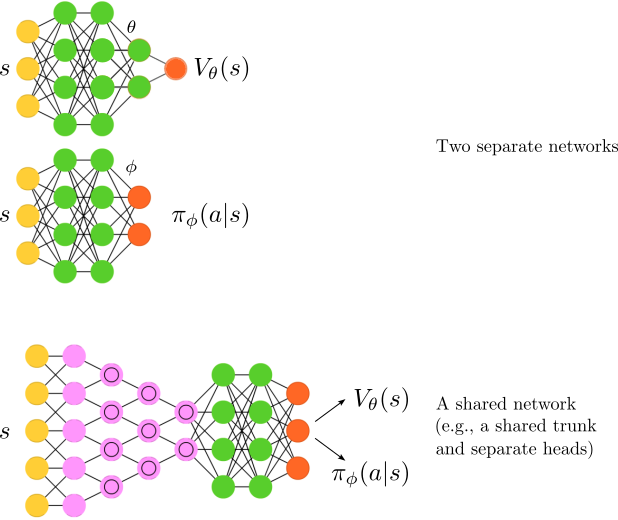
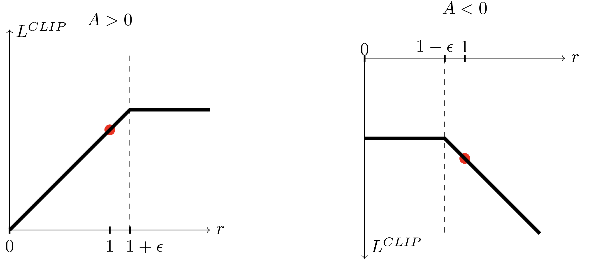

Deep Reinforcement Learning
Advanced Algorithms (Part I)
Prof. Dr. Sebastian Peitz
Chair of Safe Autonomous Systems, TU Dortmund
Summer term 2026
Content
- The evolution of modern RL algorithms
- Part (I): Improving policy gradient methods
- Natural policy gradient
- Trust-region policy optimization (TRPO)
- Proximal policy optimization (PPO)
Where are we?
| Chapter | Topic | Content |
|---|---|---|
| Basics & tabular methods | ||
| 1-5 | Bandits, MDPs, Dynamic Programming, Monte Carlo, TD Learning | RL basics in finite dimensions |
| Deep-learning-based methods | ||
| 6 | Brief introduction to deep learning | The basics for what comes next |
| 7 | Value function approximation | Value estimation with function approximation |
| 8 | Deep Q-learning | Q-learning with neural networks |
| 9 | Policy gradients | Direct optimization of the policy |
| 10 | Actor-critic algorithms | Improved policy gradients via value functions |
| 11 | Advanced algorithms (Part I): From policy gradient to PPO | The evolution of modern RL algorithms |
| 12 | Advanced algorithms (Part II): From \(Q\)-learning to Soft Actor-Critic | The evolution of moderl RL algorithms |
| Model-Based Control | ||
| Advanced Topics |
The evolution of modern RL algorithms
The evolution of modern RL algorithms
(I) Policy gradient methods
- Policy is explicitly parameterized and optimized directly: \[L(\phi)=\Expsub{r(\tau)}{\tau\sim p_\phi(\tau)}.\]
- Gradient descent: \(\phi \gets \phi + \alpha \nabla_\phi L(\phi)\).
- Methods are typically on-policy.
- Algorithms: REINFORCE \(\rightarrow\) Actor-Critic \(\rightarrow\) Natural Policy Gradient \(\rightarrow\) Trust-region policy optimization (TRPO) \(\rightarrow\) Proximal policy optimization (PPO).
(II) Value-based methods
- Approximation of the \(Q\)-function:
\[Q^*(s,a) = r + \max_{a'\in\Ac}Q^*(s',a').\] - Extract implicit policy: \(\pi(s) = \arg\max_{a\in\Ac} Q^*(s,a)\).
- Typically off-policy.
- Algorithms: Q-learning \(\rightarrow\) DQN \(\rightarrow\) Deep deterministic policy gradient (DDPG) \(\rightarrow\) TD3 \(\rightarrow\) Soft actor-critic (SAC).
Shortcomings
- High variance gradients.
- Unstable policy updates.
- Catastrophic performance collapse.
Shortcomings
- Instability from bootstrapping.
- Overestimation bias.
- Maximization over actions / continuous action spaces.
Improvement strategy
- How to safely update policies.
Improvement strategy
- Stabilizing \(Q\)-learning with function approximation.
- Solving the continuous argmax problem.
Part (I): Improving policy gradient methods
Ill-conditioned gradients
\[\begin{align*} r_t &= -s_t^2 - a_t^2 \\ \log\pi_\phi\agivenb{a_t}{s_t} &= -\frac{1}{2\sigma^2}(k s_t - a_t)^2 + C, \fragment{ \qquad \phi=(k,\sigma). } \\ \nablaphi\log\pi_\phi\agivenb{a_t}{s_t} &= \begin{pmatrix} -\frac{(k s_t - a_t)s_t}{\sigma^2} \\ \frac{(k s_t - a_t)^2}{\sigma^3} \end{pmatrix} \end{align*}\]

- Optimum: \(\phi^*=(-1,0)\).
- Issue: The gradients do not point towards the optimum for smaller \(\sigma\)!
- The \(\sigma^{-3}\) term blows up.
Closely related to ill-conditioned optimization problems: 
Constraining the ascent direction
- Recall the policy gradient update: \(\phi \gets \phi + \alpha \nablaphi L(\phi)\).
- A natural idea: Constrain the length of our update step!
- Linearization of our optimization problem around \(\phi\) using Taylor series expansion: \[\begin{align*} L(\phi') &= L(\phi) + \sum_{i=1}^n \pdiff{L}{\phi_i} (\phi'_i - \phi_i) + \Oc((\phi' - \phi)^2) \\ &= L(\phi) + (\phi' - \phi)^\top \nablaphi L(\phi). \end{align*}\]
- Constrained optimization of \(\phi'\) along the steepest ascent direction: \[\phi' \gets \arg\max_{\phi'} (\phi' - \phi)^\top \nablaphi L(\phi) \qquad \fragment{ \text{subject to}\qquad \norm{\phi' - \phi}^2\leq \epsilon. } \]
- But: We just saw that some parameters change probabilities a lot more than others!
Source: (Peters and Schaal 2008)
- Alternative: Rescale the gradient so that this does not happen!
- A better way to constrain the update distance: The change in distribution via the Kullback-Leibler (KL) divergence! \[ \KLdiv{\pi_\phi}{\pi_\phi'}. \]
Aside: KL-divergence and Fisher information matrix
Kullback-Leibler divergence
- The Kullback-Leibler divergence (or KL divergence) measures the “distance” between two distributions (e.g., \(p(x)\) and \(q(x)\)) \[ \KLdiv{p}{q}= \begin{cases} \sum_{x\in\Xc} p(x) \log\cbracket{\frac{p(x)}{q(x)}} & \text{if}~\Xc~\text{is finite} \\ \int{\Xc} p(x) \log\cbracket{\frac{p(x)}{q(x)}}\dx & \text{if}~\Xc~\text{is continuous} \end{cases}. \]
- It is zero if and only if \(p(x) = q(x)\).
- Intuition: Imagine you have two different maps of the exact same city.
- Map A is completely accurate. Every street, etc., is exactly where it should be.
- Map B was drawn from memory by a friend. It’s mostly right with some minor flaws.
- If you use Map B to navigate the city, you are going to make some mistakes.
- The KL divergence answers the question: “How much extra ‘gas’ (or information) will I waste if I use Map B instead of Map A?”

- KL Divergence measures the surprise or unfair penalty you get when you use \(q\) to predict something that actually follows \(p\). If \(q\) is a perfect match for \(p\) (i.e., \(q=p\)), your surprise is zero. The worse your guess (\(q\)) is, the higher the KL divergence.
- Question: What happens if our “model” \(q\) is absolutely certain that something is not going to happen (\(q(x)=0\) for some \(x\))?
💡 The KL divergence is not a real distance. For instance, it it not symmetric (i.e., \(\KLdiv{p}{q} \neq \KLdiv{q}{p}\) in general), which means that it also does not satisfy the triangle inequality. Still, it gives us a measure of how far two distributions are apart.
Fisher information matrix
- The Fisher information matrix (FIM) measures how much information an observable random variable \(x\) carries about an unknown parameter \(\phi\) (e.g., the weights of a neural network).
- Mathematically, if we have a log-likelihood function \(\log p(x|\phi)\), the FIM (denoted as \(F\)) is the variance of its gradient (the “score”): \[\begin{equation} F = \Exp{\cbracket{\nablaphi \log\, \pC{x}{\phi}} \cbracket{\nablaphi \log\, \pC{x}{\phi}}^\top}. \label{eq:Adv_Fisher_Information_Matrix} \end{equation}\]
In simpler terms: How do variations of \(\phi\) influence the resulting probability distribution?
- High Fisher Information: Small change in \(\phi\) \(\Rightarrow\) large shift in the distribution.
- Low Fisher Information: Change in \(\phi\) \(\Rightarrow\) only small shift in the distribution.
Relation to the KL divergence
- Consider a very small change in \(\phi\) by \(\Delta\phi\), and study the KL divergence \(\KLdiv{\pC{x}{\phi}}{\pC{x}{\phi + \Delta\phi}}\).
- If we perform a Taylor series expansion of \(D_{\mathsf{KL}}\) around \(\Delta\phi=0\), then the first two terms are zero (\(\KLdiv{\pC{x}{\phi}}{\pC{x}{\phi}} = 0\) and since \(\Delta\phi=0\) is the minimum, the first derivative is zero as well).
- The second order term is thus the leading term! \(\Rightarrow\) for small \(\Delta\phi\), we have \[\begin{equation} \KLdiv{\pC{x}{\phi}}{\pC{x}{\phi + \Delta\phi}} \approx \frac{1}{2} \Delta\phi^\top F \Delta\phi. \label{eq:Adv_KLdiv_Fisher} \end{equation}\]
KL-divergence and Fisher information in RL
- When using the KL divergence or the Fisher information matrix in RL, we often do so in terms of different policies.
- This means that we consider the difference in the action distribution \(\KLdiv{\pi_\phi}{\pi_{\phi'}}\).
- However, this expression is incomplete or even misleading.
- Instead, we consider either \[ \KLdiv{\pi_\phi\agivenb{\cdot}{s}}{\pi_{\phi'}\agivenb{\cdot}{s}} = \int_{\Ac} \pi_\phi\agivenb{a}{s} \log\cbracket{\frac{\pi_\phi\agivenb{a}{s}}{\pi_{\phi'}\agivenb{a}{s}}}\dint{a}\] for a fixed \(s\), or the expectation over the state space, i.e., \[\Expsub{\KLdiv{\pi_\phi\agivenb{\cdot}{s}}{\pi_{\phi'}\agivenb{\cdot}{s}}}{s \sim p_\phi}. \]
- The relation between KL divergence and FIM for small changes can be derived analogously to the previous slide and reads \[\Expsub{\KLdiv{\pi_\phi}{\pi_{\phi'}}}{s \sim p_\phi} \approx \frac{1}{2} \Delta\phi^\top \big( \underbrace{\Expsub{F(s)}{s \sim p_\phi}}_{=F} \big) \Delta\phi \fragment{ = \frac{1}{2} \Delta\phi^\top F \Delta\phi.}\]
Natural policy gradient
Back to constrained ascent directions
- Recall: constraining w.r.t. the parameter \(\phi\) does not solve the issue of strongly different impacts of individual parameters: \[\phi' \gets \arg\max_{\phi'} (\phi' - \phi)^\top \nablaphi L(\phi) \qquad \text{subject to}\qquad \norm{\phi' - \phi}^2\leq \epsilon.\qquad\qquad\qquad\qquad \]
- Question: What is a good alternative to avoid too large (and thus, harmful) steps?
\(\Rightarrow\) the KL divergence! \[\phi' \gets \arg\max_{\phi'} (\phi' - \phi)^\top \nablaphi L(\phi) \qquad \text{subject to}\qquad \Expsub{\KLdiv{\pi_{\phi'}\agivenb{\cdot}{s}}{\pi_{\phi}\agivenb{\cdot}{s}}}{s \sim p_\phi}\leq \epsilon. \]- Constraining the KL divergence means that we automatically treat different parameters differently!
- If a change in one of the entries of \(\phi\) results in large policy changes, then the constraint does not allow large changes in that entry.
- Since we want to have small updates (constrained by \(\epsilon\)): approximation via the Fisher information matrix, \[\begin{align*} \phi' \gets \arg\max_{\phi'} (\phi' - \phi)^\top \nablaphi L(\phi) \qquad &\text{subject to}\qquad (\phi'-\phi)^\top F (\phi'-\phi), \\ &\text{with}\qquad F = \Expsub{\cbracket{\nablaphi \log\, \pi_{\phi}\agivenb{a}{s}} \cbracket{\nablaphi \log\, \pi_{\phi}\agivenb{a}{s}}^\top}{s \sim p_\phi, a \sim \pi_\phi\agivenb{\cdot}{s}}. \end{align*} \]
Natural policy gradient
- We have now defined a policy gradient whose update length is constrained in terms of the KL divergence: \[\begin{equation} \phi' \gets \arg\max_{\phi'} (\phi' - \phi)^\top \nablaphi L(\phi) \quad \text{subject to}\quad (\phi'-\phi)^\top F (\phi'-\phi). \label{eq:Adv_Natural_PG} \end{equation}\]
- What remains is the question of solving \(\eqref{eq:Adv_Natural_PG}\).
- Without going into further details (e.g., (S. M. Kakade 2001; Peters and Schaal 2008))
\(\Rightarrow\) Solution: scale the policy gradient by the inverse Fisher information matrix, \[\begin{equation} \phi \gets \phi + \alpha F^{-1} \nablaphi L(\phi). \label{eq:Adv_NPG} \end{equation}\] - Intuition behind the inverse FIM \(F^{-1}\):
- Parameters with a high impact have high Fisher information.
- Scaling by the inverse “normalizes” the individual impacts.
- This techinque is known as the natural policy gradient (also covariant policy gradient).
- Preconditioning steps of this type are very common in optimization in general.
- Drawback: \(F\in\R^{d \times d}\) can be very expensive to calculate (and invert) for very large parameter vectors.
Limitations of the natural policy gradient
\[\begin{equation} \phi \gets \phi + \alpha F^{-1} \nablaphi L(\phi) \tag{\ref{eq:Adv_NPG}} \end{equation}\]
1. The step size \(\alpha\) is hard to choose!
- Scaling doesn’t prevent the step from changing the policy too much.
- Large steps can collapse performance.
2. No explicit control of policy change.
- NPG does not explicitly constrain the distance between \(\subold{\pi}\) and \(\subnew{\pi}\).
- Data for gradient estimation is sampled from \(\subold{\pi}\).
- If new policy differs too much, gradient estimate becomes unreliable.
3. Inversion of the Fisher matrix.
- NPG requires inversion of the Fisher Information Matrix.
- If our network has \(d\) parameters, the FIM is a \(d \times d\) matrix.
- For a modest deep learning network with 100,000 parameters, \(F\) contains 10 billion elements.
- Storing this in memory and computing its exact inverse (\(\Oc(d^3)\) complexity) \(\Rightarrow\) computationally impossible.
4. Performance guarantees require small policy changes.
- NPG does not provide a mathematical guarantee that \(\subnew{\pi}\) will actually be better than (or at least as good as) \(\subold{\pi}\).
- Theory shows that small policy updates should improve performance (S. Kakade and Langford 2002) …
- … but the basic NPG update does not enforce the required small change condition.
Trust-region policy optimization
Performance measures of policies
- Let’s introduce a new (and yet already known quantity): the performance measure of a policy, \[ \eta(\pi) = \Expsub{\sum_{t=0}^{T-1}\gamma^t r_t}{\tau\sim \pi} = \Expsub{V^\pi(s_0)}{s_0 \sim p_0}. \]
- Remember our reinforcement learning objective \[ L(\phi) = \Expsub{\sum_{t=0}^{T-1}r_t}{\tau\sim p_\phi(\tau)} = \Expsub{\Vpiphi(s_0)}{s_0 \sim p_0} ? \]
- If we consider a policy parameterized by \(\phi\), i.e., \(\pi_\phi\), then the two equations are the same, \[\eta(\pi_\phi) = L(\phi).\]
- The difference is more in terms of the motivation, not the definition:
- We use \(L(\phi)\) in policy gradients, since we want to find ascent directions for the network paraemters.
- We use \(\eta(\pi)\) as a global quantity to establish mathematical lower-bounds so that an algorithm can compute a safe step size (the trust region).
💡 For more details on this matter, see (S. Kakade and Langford 2002; Schulman et al. 2015).
Comparing the performance measure of two policies (1)
- Can we relate two policies \(\subold{\pi}\) and \(\subnew{\pi}\) using advantage functions?
- Let’s use \(\gamma=1\) for simplicity (but one can work this out with \(\gamma\) as well).
- Consider the advantage function under the old policy \(\subold{\pi}\), \[ A_{\subold{\pi}}(s_t,a_t) = r_t + V^{\subold{\pi}}(s_{t+1}) - V^{\subold{\pi}}(s_{t}). \]
- Now sample a trajectory under the new policy \(\subnew{\pi}\) (i.e., \((s_0,a_0) \to \ldots \to (s_{T-1},a_{T-1})\)) and calculate the advantages: \[\begin{align*} A_{\subold{\pi}}(s_0,a_0) &= r_0 + V^{\subold{\pi}}(s_{1}) - V^{\subold{\pi}}(s_{0}) \\ A_{\subold{\pi}}(s_1,a_1) &= r_1 + V^{\subold{\pi}}(s_{2}) - V^{\subold{\pi}}(s_{1}) \\ &~ ~ \vdots \\ A_{\subold{\pi}}(s_{T-2},a_{T-2}) &= r_{T-2} + V^{\subold{\pi}}(s_{T-1}) - V^{\subold{\pi}}(s_{T-2}) \\ A_{\subold{\pi}}(s_{T-1},a_{T-1}) &= r_{T-1} + \underbrace{V^{\subold{\pi}}(s_{T})}_{=0 \text{ (terminal)}} - V^{\subold{\pi}}(s_{T-1}) \end{align*}\]
Comparing the performance measure of two policies (2)
- Take the sum: \[\begin{align*} \sum_{t=0}^{T-1} A_{\subold{\pi}}(s_t,a_t) &= \underbrace{r_0 \textcolor{blue}{+ {V^{\subold{\pi}}(s_{1})}} - V^{\subold{\pi}}(s_{0})}_{=A_{\subold{\pi}}(s_0,a_0)} + \underbrace{r_1 + {V^{\subold{\pi}}(s_{2})} \textcolor{blue}{- {V^{\subold{\pi}}(s_{1})}}}_{=A_{\subold{\pi}}(s_1,a_1)} + \ldots + \underbrace{r_{T-2} \textcolor{red}{+ {V^{\subold{\pi}}(s_{T-1})}} - {V^{\subold{\pi}}(s_{T-2})}}_{=A_{\subold{\pi}}(s_{T-2},a_{T-2})} + \underbrace{r_{T-1} \textcolor{red}{- {V^{\subold{\pi}}(s_{T-1})}}}_{=A_{\subold{\pi}}(s_{T-1},a_{T-1})} \\ &= r_0 + r_1 + \ldots + r_{T-2} + r_{T-1} - V^{\subold{\pi}}(s_{0}) \fragment{ = \cbracket{\sum_{t=0}^{T-1} r_t} - V^{\subold{\pi}}(s_{0}) .} \end{align*}\]
- Shift around and take the expectation with respect to the new policy (in the case of \(V^{\subold{\pi}}\), this reduces to \(s_0 \sim p_0\)): \[\begin{align*} \Expsub{\cbracket{\sum_{t=0}^{T-1} r_t}}{s\sim p_{\subnew{\pi}}, a\sim\subnew{\pi}} &= \Expsub{V^{\subold{\pi}}(s_{0})}{s_0 \sim p_0} + \Expsub{\sum_{t=0}^{T-1} A_{\subold{\pi}}(s_t,a_t)}{s\sim p_{\subnew{\pi}}, a\sim\subnew{\pi}} \\ \Leftrightarrow \qquad\eta(\subnew{\pi}) &= \eta(\subold{\pi}) + \Expsub{\sum_{t=0}^{T-1} \gamma^t A_{\subold{\pi}}(s_t,a_t)}{s\sim p_{\subnew{\pi}}, a\sim\subnew{\pi}} \end{align*}\]
- Right now, the expectation is written over an entire lifetime trajectory (\(\tau \sim \subnew{\pi}\)).
- To be useful for an optimization algorithm, we need to break it down step-by-step and look at individual states and actions.
Comparing the performance measure of two policies (3)
- Let’s consider the continual case (\(T=\infty\)) such that we can disect the expectation into individual steps: \[\begin{align*} \Expsub{\sum_{t=0}^{\infty} \gamma^t A_{\subold{\pi}}(s_t,a_t)}{s\sim p_{\subnew{\pi}}, a\sim\subnew{\pi}} &= \sum_{t=0}^{\infty} \gamma^t \Expsub{A_{\subold{\pi}}(s_t,a_t)}{s\sim p_{\subnew{\pi}}, a\sim\subnew{\pi}} \\ &=\sum_{t=0}^{\infty}\int_\Sc p_{\subnew{\pi}}(s) \int_\Ac \subnew{\pi}\agivenb{a}{s} A_{\subold{\pi}}(s,a) \dint{a} \dint{s}\\ &=\int_\Sc \underbrace{\cbracket{\sum_{t=0}^{\infty} \gamma^t p_{\subnew{\pi}}(s)}}_{\fragment{ =\rho_{\subnew{\pi}}(s) }} \cbracket{\int_\Ac \subnew{\pi}\agivenb{a}{s} A_{\subold{\pi}}(s,a) \dint{a}} \dint{s} \\ &= \Expsub{A_{\subold{\pi}}(s,a)}{s \sim \rho_{\subnew{\pi}}, a\sim\subnew{\pi}}. \end{align*}\]
- Here, we have introduced the discounted state distribution \(\rho_{\subnew{\pi}}(s)\).
Relation between the performance measures
\[\begin{equation} \eta(\subnew{\pi}) = \eta(\subold{\pi}) + \Expsub{A_{\subold{\pi}}(s,a)}{s \sim \rho_{\subnew{\pi}}, a\sim\subnew{\pi}} \label{eq:Adv_performance_measures} \end{equation}\]
💡 When sampling, the data will automatically be distributed according to \(\rho_{\subnew{\pi}}(s)\). See also the discussion in the actor-critic lecture.
Comparing the performance measure of two policies (4)
Relation between the performance measures
\[\begin{equation} \eta(\subnew{\pi}) = \eta(\subold{\pi}) + \Expsub{A_{\subold{\pi}}(s,a)}{s \sim \rho_{\subnew{\pi}}, a\sim\subnew{\pi}} \tag{\ref{eq:Adv_performance_measures}} \end{equation}\]
What’s so surprising about this equation?
- The Advantage function is built entirely out of the old policy’s values,
- yet when we weight it by the new policy’s state distribution,
- it perfectly calculates the new policy’s total return.
Upside and downside of this identity
\(\textcolor{green}{\mathbf{+}\text{ Proof that if you can find a new policy with a positive expected advantage under the old policy, your policy will get better.}}\)
\(\textcolor{red}{\mathbf{-}\text{ To compute the exact value, we must sample states from the new policy (}s \sim p_{\subnew{\pi}}\text{), which we do not yet know!}}\)
Solution approach in TRPO: “If \(\subnew{\pi}\) is very close to \(\subold{\pi}\) (enforced by a KL-constraint), we can swap the state distribution \(p_{\subnew{\pi}}\) for \(p_{\subnew{\pi}}\) and safely optimize an approximation (i.e., a surrogate objective).”
How to turn this into an algorithm
Relation between the performance measures
\[\begin{equation} \eta(\subnew{\pi}) = \eta(\subold{\pi}) + \Expsub{A_{\subold{\pi}}(s,a)}{s \sim \rho_{\subnew{\pi}}, a\sim\subnew{\pi}} \tag{\ref{eq:Adv_performance_measures}} \end{equation}\]
Starting with \(\eqref{eq:Adv_performance_measures}\), we need to take the several steps to arrive at an algorithm that we can actually implement.
- Construct a local approximation of \(\eqref{eq:Adv_performance_measures}\) (the surrogate loss) which we can estimate using samples.
- Ensure that this approximation is sufficiently accurate.
- Turn he surrogate loss function into a practical optimization problem.
- Make sure that it scales to large problems.
Trust-region policy optimization (TRPO)
The first realization of these steps resulted in the TRPO algorithm, which was derived in (Schulman et al. 2015).
TRPO: The surrogate loss function
Relation between the performance measures
\[\begin{equation} \eta(\subnew{\pi}) = \eta(\subold{\pi}) + \Expsub{A_{\subold{\pi}}(s,a)}{s \sim \rho_{\subnew{\pi}}, a\sim\subnew{\pi}} \tag{\ref{eq:Adv_performance_measures}} \end{equation}\]
- In principle, this equation shows us a way to guarantee policy improvement.
- If we can ensure positive expected advantages, then we improve!
- But: Sampling under the new policy (\(s\sim \rho_{\subnew{\pi}}, a\sim\subnew{\pi}\)) is infeasible, as we do not have it yet!
A surrogate loss function
- Simple trick: just sample the state \(s\) under the old policy! \[\begin{equation} L_\subold{\pi}(\pi) = \eta(\subold{\pi}) + \Expsub{A_{\subold{\pi}}(s,a)}{\textcolor{red}{s\sim \rho_{\subold{\pi}}}, a\sim\pi}. \label{eq:Adv_surrogate_loss} \end{equation}\]
- Under the assumption that \(\subold{\pi}\) and \(\subnew{\pi}\) do not differ too much, this is a reasonable assumption.
- In the limit case \(\subold{\pi} = \subnew{\pi}\), we have equality of \(\eqref{eq:Adv_performance_measures}\) and \(\eqref{eq:Adv_surrogate_loss}\), as well as their gradients (Schulman et al. 2015, Eq. (4)).
TRPO: Approximation error
In (Schulman et al. 2015), it was shown that error between the two expressions \(\eqref{eq:Adv_performance_measures}\) and \(\eqref{eq:Adv_surrogate_loss}\) can be bounded \[\eta(\pi) \ge L_\subold{\pi}(\pi) - C \cdot \KLdivmax{\subold{\pi}}{\pi}, \qquad \text{with}\quad\KLdivmax{\subold{\pi}}{\pi}=\max_{s\in\Sc}\KLdiv{\pi_\phi\agivenb{\cdot}{s}}{\pi_{\phi'}\agivenb{\cdot}{s}},\] and \(C\) is a constant derived from the environment’s transition dynamics and the maximum bounds of the advantage function.
Central message: If we maximize the right-hand side of this inequality, we are guaranteed to improve (or at least maintain) our true performance \(\eta(\pi)\)!
Maximizing the surrogate loss \(\Rightarrow\) introducing a parametric policy \(\pi_\phi\), our surrogate-based optimization problem is \[ \max_\phi L_\subold{\pi}(\pi_\phi) - C \cdot \KLdivmax{\subold{\pi}}{\pi_\phi}, \] or, if we consider two iterates \(\phi\) and \(\phi'\) \[ \max_{\phi'} L_{\pi_\phi}(\pi_{\phi'}) - C \cdot \KLdivmax{\pi_\phi}{\pi_{\phi'}}. \]
Challenges:
- The constant \(C\) is usually large and thus restrictive
Solution: Transfer to a constraint with hyperparameter \(\delta\). - Computing the maximum KL divergence over all possible states (\(\KLdivmax{\pi_{\subold{\phi}}}{\pi_{\phi}}\)) is impossible.
Solution: Replace by the average KL divergence over the states that were actually observed: \[\KLdivavg{\pi_\phi}{\pi_{\subold{\phi}}} = \Expsub{\KLdiv{\pi_{\subold{\phi}}\agivenb{\cdot}{s}}{\pi_{\phi}\agivenb{\cdot}{s}}}{s \sim \rho_{\pi_\subold{\phi}}}.\]
TRPO: Sampling the correct expectation
Our final observation is that in our surrogate loss function \(L_\subold{\pi}\) (Eq. \(\eqref{eq:Adv_surrogate_loss}\)), the “old” performance measure \(\eta(\subold{\pi})\) serves as a constant \(\Rightarrow\) we can neglect it!
- Overall, we obtain the following surrogate optimization problem: \[ \max_{\phi} \underbrace{\Expsub{A_{\subold{\pi}}(s,a)}{s\sim \rho_{\subold{\pi}}, a\sim{\pi_\phi}}}_{=L_\subold{\pi}(\pi_\phi) - \eta(\subold{\pi})} \quad\text{subject to}\quad \underbrace{\Expsub{\KLdiv{\subold{\pi}\agivenb{\cdot}{s}}{\pi_{\phi}\agivenb{\cdot}{s}}}{s \sim \rho_{\subold{\pi}}}}_{=\KLdivavg{\subold{\pi}}{\pi_{\phi}}} \leq \delta.\]
- What’s wrong with this equation?
\(\Rightarrow\) In the loss, we’re compute expectations over the new policy \(\pi_\phi\), but the data was collected under \(\subold{\pi}\)! \[\Expsub{A_{\subold{\pi}}(s,a)}{s\sim \rho_{\subold{\pi}}, a\sim{\pi_\phi}} = \int_\Sc \rho_{\subold{\pi}}(s) \int_\Ac \pi_\phi\agivenb{a}{s} A_{\subold{\pi}}(s,a) \dint{a} \dint{s}. \] - Solution: Importance sampling! \[ \int_\Sc \rho_{\subold{\pi}}(s) \int_\Ac \subold{\pi}\agivenb{a}{s}\frac{\pi_\phi\agivenb{a}{s}}{\subold{\pi}\agivenb{a}{s}} A_{\subold{\pi}}(s,a) \dint{a} \dint{s} = \Expsub{\frac{\pi_\phi\agivenb{a}{s}}{\subold{\pi}\agivenb{a}{s}} A_{\subold{\pi}}(s,a)}{s\sim \rho_{\subold{\pi}}, a\sim\subold{\pi}}. \]
TRPO: The surrogate optimization problem
Trust-region policy optimization (TRPO) optimization problem
\[\begin{equation} \max_{\phi} \underbrace{\Expsub{\frac{\pi_\phi\agivenb{a}{s}}{\subold{\pi}\agivenb{a}{s}}A_{\subold{\pi}}(s,a)}{s\sim \rho_{\subold{\pi}}, a\sim\subold{\pi}}}_{=L_\mathsf{TRPO}(\phi)} \quad\text{subject to}\quad \underbrace{\Expsub{\KLdiv{\subold{\pi}\agivenb{\cdot}{s}}{\pi_{\phi}\agivenb{\cdot}{s}}}{s \sim \rho_{\subold{\pi}}}}_{=\KLdivavg{\subold{\pi}}{\pi_{\phi}}} \leq \delta. \label{eq:Adv_TRPO_Opt} \end{equation}\]
Next question: How do we solve it efficiently? \(\Rightarrow\) Let’s start with the gradient!
\[ \nablaphi L_\mathsf{TRPO}(\phi) = \nablaphi \Expsub{\frac{\pi_\phi\agivenb{a}{s}}{\subold{\pi}\agivenb{a}{s}}A_{\subold{\pi}}(s,a)}{s\sim \rho_{\subold{\pi}}, a\sim\subold{\pi}} \fragment{ = \Expsub{\frac{\nablaphi \pi_\phi\agivenb{a}{s}}{\subold{\pi}\agivenb{a}{s}}A_{\subold{\pi}}(s,a)}{s\sim \rho_{\subold{\pi}}, a\sim\subold{\pi}} } \]
The Policy gradient for the TRPO surrogate loss
\[\begin{equation} \begin{aligned} g &= \nablaphi L_\mathsf{TRPO}(\phi) \fragment{ \Big|_{\textcolor{red}{\phi=\subold{\phi}}} } \fragment{ =\Expsub{\frac{\nablaphi \pi_{\phi}\agivenb{a}{s}\big|_{\phi=\subold{\phi}}}{\pi_\subold{\phi}\agivenb{a}{s}}A_{\pi_\subold{\phi}}(s,a)}{s\sim \rho_{\pi_\subold{\phi}}, a\sim\pi_\subold{\phi}} } \\ &=\Expsub{\nablaphi \log \pi_\phi\agivenb{a}{s}\big|_{\phi=\subold{\phi}} A_{\pi_\subold{\phi}}(s,a)}{s\sim \rho_{\pi_\subold{\phi}}, a\sim\pi_\subold{\phi}} \quad\textcolor{grey}{\text{\textit{(Log-identity trick)}}} \end{aligned} \label{eq:Adv_TRPO_gradient}\end{equation}\] is the standard policy gradient with value baseline!
TRPO: Solving the optimization problem \(\eqref{eq:Adv_TRPO_Opt}\)
To solve Problem \(\eqref{eq:Adv_TRPO_Opt}\) efficiently, we need two steps:
- Linearize the objective function: First-order Taylor series expansion around \(\subold{\phi}\) using the gradient \(g\) (Eq. \(\eqref{eq:Adv_TRPO_gradient}\)). \[ L_\mathsf{TRPO}(\phi) \approx L_\mathsf{TRPO}(\subold{\phi}) + g^\top(\phi - \subold{\phi}) \fragment{ = g^\top(\phi - \subold{\phi}). } \] (The term \(L_\mathsf{TRPO}(\subold{\phi})\) drops out because it is exactly zero at \(\subold{\phi}\): No advantage and sampling ratio is one.)
- Quadratic approximation of the KL constraint for small \(\Delta\phi=(\phi - \subold{\phi})\) \(\Rightarrow\) Fisher information matrix (Eq. \(\eqref{eq:Adv_KLdiv_Fisher}\))!
Linear-quadratic approximation of the TRPO problem \(\eqref{eq:Adv_TRPO_Opt}\)
\[\begin{equation} \max_{\Delta\phi} g^\top\Delta\phi \quad\text{subject to}\quad \frac{1}{2}\Delta\phi^\top F \Delta\phi \leq \delta, \label{eq:Adv_TRPO_LQOpt} \end{equation}\] where, according to \(\eqref{eq:Adv_Fisher_Information_Matrix}\), \[F(\phi) = \Expsub{ \rbracket{\cbracket{\nablaphi \log\, \pi_{\phi}\agivenb{a}{s}} \cbracket{\nablaphi \log\, \pi_{\phi}\agivenb{a}{s}}^\top}_{\phi=\subold{\phi}}}{s\sim \rho_{\pi_\subold{\phi}}, a\sim\pi_\subold{\phi}}.\]
Solution to \(\eqref{eq:Adv_TRPO_LQOpt}\)
The solution (via Lagrange multipliers) yields \[\begin{equation} \Delta \phi = \sqrt{\frac{2\delta}{g^\top F^{-1} g}} F^{-1} g. \label{eq:Adv_TRPO_step} \end{equation}\] Note: This is NPG \(\eqref{eq:Adv_NPG}\) with automatic step size selection \(\alpha=\sqrt{\frac{2\delta}{g^\top F^{-1} g}}\)!
💡 In classical optimization, the local approximation \(\eqref{eq:Adv_TRPO_LQOpt}\) is solved repeatedly. The solution can be shown to converge to the optimum of \(\eqref{eq:Adv_TRPO_Opt}\), which is known as Sequential Quadratic Programming (SQP). In TRPO, we solve the approximation \(\eqref{eq:Adv_TRPO_LQOpt}\) just once before collecting new data.
TRPO: Avoiding matrix inversion
\[\begin{equation} \Delta \phi = \sqrt{\frac{2\delta}{g^\top F^{-1} g}} F^{-1} g \tag{\ref{eq:Adv_TRPO_step}} \end{equation}\]
- Matrix inversion scales cubically. That is, for a \(d\)-dimensional parameter \(\phi\in\R^d\), we have \(\Oc(d^3)\).
- Solution: Use the conjugate gradient (CG) method for solving linear systems of the form \(F x = g\).
- Usually, CG scales according to \(\Oc(d^2)\) per iteration.
- However, in TRPO, we can avoid calculating \(F\in\R^{d\times d}\) entirely using automatic differentiation \(\Rightarrow\) scales linearly with the number of weights (i.e., \(\Oc(d)\)).
- This is as fast as it gets!
Approach
- Compute \(x = F^{-1}g\) using the CG method (\(\Oc(d)\) if we use autodiff).
- Calculate the denominator in \(\eqref{eq:Adv_TRPO_step}\) (Note that \(F^\top = F\), since the Fisher information matrix is symmetric): \[ \nu = g^\top F^{-1} g \fragment{ = (Fx)^\top F^{-1} Fx } \fragment{ = x^\top F^\top F^{-1} Fx } \fragment{ = x^\top F x } \fragment{ = x^\top g. } \]
- Compute the step size \(\beta = \sqrt{\frac{2\delta}{\nu}} = \sqrt{\frac{2\delta}{x^\top g}}\).
- Compute the update \(\Delta \phi = \beta x\).
TRPO: Line search
TRPO surrogate problem
\[\begin{equation}\begin{aligned} \max_{\phi} L_\mathsf{TRPO}(\phi) \quad\text{s.t.}\quad \KLdivavg{\subold{\pi}}{\pi_{\phi}} \leq \delta. \end{aligned} \tag{\ref{eq:Adv_TRPO_Opt}} \end{equation}\]
Linear-quadratic approximation
\[\begin{equation} \max_{\Delta\phi} g^\top\Delta\phi \quad\text{subject to}\quad \frac{1}{2}\Delta\phi^\top F \Delta\phi \leq \delta, \tag{\ref{eq:Adv_TRPO_LQOpt}} \end{equation}\]
Issue: Even though we have selected an optimal step size for Problem \(\eqref{eq:Adv_TRPO_LQOpt}\) via Eq. \(\eqref{eq:Adv_TRPO_step}\), we are not guaranteed that in \(\eqref{eq:Adv_TRPO_Opt}\), we
- actually get a descent in \(L_\mathsf{TRPO}(\phi)\),
- satisfy the constraint \(\KLdivavg{\subold{\pi}}{\pi_{\phi}} \leq \delta\).
Step length selection via backtracking. Define a shrinkage parameter \(\alpha\in(0,1)\) and
- Get \(\Delta\phi\) by solving \(\eqref{eq:Adv_TRPO_LQOpt}\).
- Calculate candidate \(\phi' = \subold{\phi} + \Delta\phi\) for the next iterate.
- Check the following two conditions (recall that \(L_\mathsf{TRPO}(\subold{\phi})=0\)): \[(I)\quad L_\mathsf{TRPO}(\phi') >0 ~ ? \qquad\text{and}\qquad (II)\quad \KLdivavg{\subold{\pi}}{\pi_{\phi'}} \leq \delta ~ ?\]
- if (I) and (II) ✅ then \(\subnew{\phi}\gets\phi'\) and \(\STOP\) else: \(\Delta\phi \gets \alpha \Delta\phi\) and back to 2.
Note: Condition (II) is checked point-wise on the training batch: \[\begin{align*} &\KLdivavg{\subold{\phi}}{\subnew{\phi}}= \\ &\frac{1}{N}\sum_{i=1}^N \KLdiv{\pi_{\subold{\phi}}\agivenb{\cdot}{s_i}}{\pi_{\subnew{\phi}}\agivenb{\cdot}{s_i}}. \end{align*}\] That’s why TRPO does not apply to deterministic policies right away!
TRPO: Final algorithm
Input: Initial policy parameters \(\iterate{\phi}{0}\), trust-region bound \(\delta\), backtracking parameter \(\alpha \in (0, 1)\), acceptance threshold \(\epsilon > 0\).
For iterations \(k = 0, 1, 2, \dots\) until convergence:
- Data collection: Run the current policy \(\pi_{\iterate{\phi}{k}}\) in the environment to collect a batch of trajectories \(\Bc = \{(s_t, a_t, r_t)\}\).
- Advantage estimation: Estimate the advantage values \(A_{\iterate{\theta}{k}}(s, a)\) for all sampled steps.
- Compute policy gradient (\(g\)): Evaluate the standard policy gradient vector \(g\) using the collected samples: \[g = \frac{1}{\abs{\Bc}} \sum_{s,a \in \Bc} \nablaphi \log \pi_\phi\agivenb{a}{s}\Big|_{\phi=\iterate{\phi}{k}} A_{\iterate{\phi}{k}}(s,a)\]
- Compute Step Direction (\(x\)) via Truncated CG (\(10\) to \(20\) iterations) to solve the linear system \(Fx = g\) for \(x \approx F^{-1}g\).
- Maximal step size (\(\beta\)): Compute \(\beta = \sqrt{\frac{2\delta}{x^T F x}}\). Set the full proposed step direction: \(\Delta \phi = \beta x\).
- Backtracking: Find largest factor \(\gamma = \alpha^j\) (for \(j = 0, 1, 2, \dots\)) such that \(\subnew{\phi} = \iterate{\phi}{k} + \gamma \Delta \phi\) satisfies: \[L_\mathsf{TRPO}(\subnew{\phi}) >0 \qquad\text{and}\qquad \KLdivavg{\iterate{\phi}{k}}{\subnew{\phi}} \leq \delta \]
- Policy Update: Update parameters to the safe, verified step: \(\iterate{\phi}{k+1} = \iterate{\phi}{k} + \gamma \Delta \phi\) (or reject if no \(\gamma\) can be found).
TRPO: The big picture and relation to actor-critic
The Big Picture Structure
Collect Data ──► Advantage estimation ──► Compute Gradient (g) ──► CG Loop (F⁻¹g) ──► Line Search (KL ≤ δ) ──► Update θ
▲ │
└────────────────────────────────────────────────────────────────────────────────────────────────────────────┘
Relation to actor-critic
- At its core, TRPO is an Actor-Critic algorithm in practice:
- It uses a value network critic to estimate \(A_{\iterate{\theta}{k}}(s, a)\).
- However, it was derived from first principles using policy gradient theory.
- The primary goal of the paper was to solve a massive mathematical flaw in early actor-critic methods: the lack of monotonic improvement guarantees.
Example: Half-Cheetah
As an example, we study the Half Cheetah example from the MuJoCo library.
- \(\Sc\): 17 states.
- \(\Ac\): 6 actions.
- Reward: Forward-Cost - Control-Cost.


Results with TRPO

Proximal policy optimization (PPO)
Drawbacks of TRPO
Drawback A: Large computational overhead (the CG bottleneck)
- TRPO relies on the Conjugate Gradient (CG) method to compute the matrix-free step direction \(F^{-1}g\).
- While CG is much cheaper than explicit matrix inversion, it still requires running a separate \(10\)-to-\(20\) iteration inner loop for every single policy update, evaluating two backpropagation passes per CG step.
Drawback B: Code complexity and fragility
- TRPO requires custom optimization pipelines. You cannot simply hand a TRPO objective to a standard deep learning optimizer like Adam.
- Requires writing both a dedicated Conjugate Gradient solver and backtracking line search.
Drawback C: Incompatibility with shared architectures
- In modern deep RL, it is common to use a shared network architecture with two heads for the policy actions (Actor) and the state-value estimates (Critic).
- Because TRPO’s constraint is calculated purely using the Fisher Information Matrix of the policy, it has no mathematical way to constrain or properly scale the value function parameters.
- As a result we are forced to maintain two entirely separate neural networks.

Avoiding the constraint
- The core breakthrough leading to Proximal Policy Optimization (PPO) (Schulman et al. 2017) was the realization that we don’t need a massive, second-order constraint boundary (like a KL ellipse) to keep the policy updates safe.
- Instead of a constraint, we can enforce a trust region directly inside the objective function by punishing the optimizer if it tries to push the new policy too far away from the old one.
The clipped surrogate objective in PPO
\[\begin{equation} L_\mathsf{CLIP}(\phi) = \Exphat{\min\left( \kappa_t(\phi)A_t, \, \mathsf{clip}(\kappa_t(\phi), 1-\epsilon, 1+\epsilon)A_t \right)}, \label{eq:Adv_PPO_Objective} \end{equation}\] where we have simplified the notation in several ways:
- \(\kappa_t(\phi) = \frac{\pi_\phi\agivenb{a_t}{s_t}}{\pi_\subold{\phi}\agivenb{a_t}{s_t}}\) is the importance sampling ratio.
- \({A}_t\) is the estimated advantage at time \(t\), i.e., \(A_\theta(s_t,a_t)\) (typically using a critic network).
- \(\epsilon\) is a hyperparameter (typically \(0.1\) or \(0.2\)) determining how far the policy is allowed to drift.
- \(\Exphat{f_t} = \frac{1}{T}\sum_{t=1}^T f_t\) denotes an empirical expectation (i.e., a sample average) which, in the limit \(T\to\infty\), yields our analytical expectation \(\Expsub{f_t}{s\sim \rho_{\pi_{\phi}}, a\sim\pi_{\phi}}\). This notation was chosen in (Schulman et al. 2017) for two reasons:
- It aligns closely with the implementation.
- It handles both infinite and finite-time trajectories.
Understanding the clipped surrogate objective (1)
\[L_\mathsf{TRPO}(\phi) = \E_{s\sim \rho_{\subold{\pi}}, a\sim\subold{\pi}}\Big[\underbrace{\frac{\pi_\phi\agivenb{a}{s}}{\subold{\pi}\agivenb{a}{s}}}_{=\kappa(\phi)}A_{\subold{\pi}}(s,a)\Big]\quad \text{vs.} \quad L_\mathsf{CLIP}(\phi) = \Exphat{\min\left( \kappa_t(\phi)A_t, \, \mathsf{clip}(\kappa_t(\phi), 1-\epsilon, 1+\epsilon)A_t \right)}.\]
The clipping function \(\mathsf{clip}(r_t(\phi), 1-\epsilon, 1+\epsilon)\) bounds the importance sampling ratio \(\kappa_t\) to
- at most \(1+\epsilon\) if \(A>0\),
- at least \(1-\epsilon\) if \(A<0\).
The \(\min\) function ensures that we take the minimum of the clipped and unclipped objective \(\Rightarrow\) \(L_\mathsf{CLIP}\) is a lower (i.e., pessimistic) bound on the unclipped objective.

Understanding the clipped surrogate objective (1)
\[L_\mathsf{TRPO}(\phi) = \E_{s\sim \rho_{\subold{\pi}}, a\sim\subold{\pi}}\Big[\underbrace{\frac{\pi_\phi\agivenb{a}{s}}{\subold{\pi}\agivenb{a}{s}}}_{=\kappa(\phi)}A_{\subold{\pi}}(s,a)\Big]\quad \text{vs.} \quad L_\mathsf{CLIP}(\phi) = \Exphat{\min\left( \kappa_t(\phi)A_t, \, \mathsf{clip}(\kappa_t(\phi), 1-\epsilon, 1+\epsilon)A_t \right)}.\]
Examples
- Positive Advantage (\(A_t > 0\))
- This means the action was good, and the optimizer wants to make it more likely by increasing \(\kappa_t(\phi)\) above \(1.0\).
- However, the clipping term caps the reward at \(1 + \epsilon\).
- The \(\min\) operator ensures that even if \(\kappa_t(\phi)\) grows (for instance, to \(1.5\) or \(2.0\)), the optimizer receives no extra gradient incentive to push it further.
- It flattens the objective landscape, stopping the policy from overshooting.
- Negative Advantage (\(A_t < 0\))
- This means the action was bad, and the optimizer wants to make it less likely by dropping \(\kappa_t(\phi)\) below \(1.0\).
- The clipping term caps this at \(1 - \epsilon\).
- Crucially, if the policy makes a disastrously huge change that makes a good action suddenly zero probability (\(\kappa_t \to 0\)), the objective drops sharply without a cap, creating a massive gradient pull that forces the policy back into the safe zone.
Evolution of policy gradient methods
- Standard policy gradient.
- Natural policy gradient \(\Rightarrow\) Balancing parameters via the Fisher information matrix.
- TRPO \(\Rightarrow\) Maximize surrogate objective subject to KL trust region.
- PPO \(\Rightarrow\) Replace hard trust region with clipped objective.
Example: Half-Cheetah
As an example, we study the Half Cheetah example from the MuJoCo library.
- \(\Sc\): 17 states.
- \(\Ac\): 6 actions.
- Reward: Forward-Cost - Control-Cost.
Results: TRPO vs. PPO
References
Kakade, Sham M. 2001. “A Natural Policy Gradient.” In Advances in Neural Information Processing Systems, edited by T. Dietterich, S. Becker, and Z. Ghahramani. Vol. 14. MIT Press. https://proceedings.neurips.cc/paper_files/paper/2001/file/4b86abe48d358ecf194c56c69108433e-Paper.pdf.
Kakade, Sham, and John Langford. 2002. “Approximately Optimal Approximate Reinforcement Learning.” In Proceedings of the Nineteenth International Conference on Machine Learning, 267–74. ICML ’02. San Francisco, CA, USA: Morgan Kaufmann Publishers Inc.
Peters, Jan, and Stefan Schaal. 2008. “Natural Actor-Critic.” Neurocomputing 71 (7): 1180–90.
Schulman, John, Sergey Levine, Pieter Abbeel, Michael Jordan, and Philipp Moritz. 2015. “Trust Region Policy Optimization.” In Proceedings of the 32nd International Conference on Machine Learning, edited by Francis Bach and David Blei, 37:1889–97. Proceedings of Machine Learning Research. Lille, France: PMLR.
Schulman, John, Filip Wolski, Prafulla Dhariwal, Alec Radford, and Oleg Klimov. 2017. “Proximal Policy Optimization Algorithms.” arXiv:1707.06347.